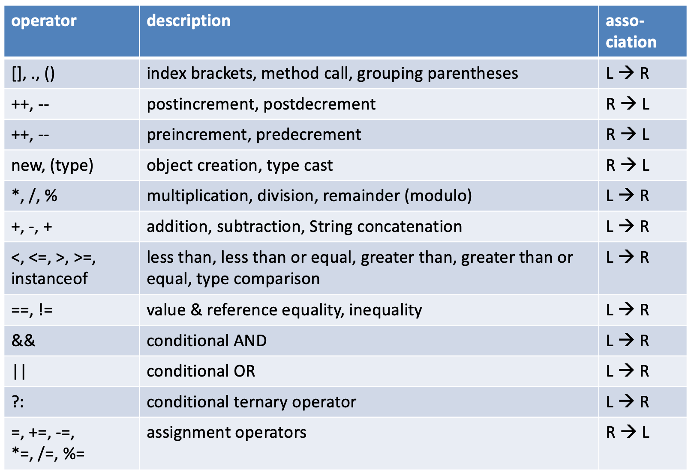

Operators
Operators are the syntax elements that bind, change and combine the data, classes and methods. Although they are extremely important, they are not very interesting in the sense that they are just what they are, almost the same in any programming language.
Therefore, this post is quite small. It starts with an overview of all operators and ends with a more detailed description of the less obvious ones.
Overview
Operators can be assigning (=), modifying, as in count++ and they
can be comparing, as in count < maximum.
Another way to classify them is to look at the number of operands they work on. They
can have one (unary - count++;), two (binary - count < maximum) or
three (_ternairy- - (age > 65 ? old=true : old=false);) operands.
Operators can be ordered by their precedence, which is the priority (order) in which they will be evaluated.
int x = 41;
int count = 1;
int y = x + ++count;
System.out.println("count=" + count + "; y=" + y);
This snippet will output "count=2; y=43" because the pre-increment operator has precedence over "+", and the assignment operator.
Here is the complete listing. The associativity (Left-to-Right or Right-to-Left) of an operator is a property that determines how operators of the same precedence are grouped in the absence of parentheses.

In general, use the rule: "When in doubt about precedence, always use parentheses".
They always have the highest precedence, and improve readability a lot. Compare these with respect to readability:
x = y + z * 2 / Math.PI;
x = y + ((z * 2) / Math.PI);
Assignment operators
Not all languages have such an extended set of assignment operators.
When you want to change the value of a variable, you can use these shorthand assignment operators
x = x + 2; is the same as x += 2;
x = x + y; is the same as x += y;
x = x * 3; is the same as x *= 3;
x = x / 3; is the same as x /= 3;
x = x % 3; is the same as x %= 3;
The last three are a bit esoteric in my opinion and I do not use them because they
lower the readability of the code (especially %=).
Modulo: %
The modulo operator is also called the remainder operator; it gives the remainder of a division.
10 % 3 -> 1 (one)
8 % 5 -> 3
This operator is often used when even/uneven items need to be identified, or other periodic cases: this will address every hundredth item:
if (x % 100 == 0) {
/*deal with every hundredth item
}
Ternary operator
The ternary operator is actually a condensed if..else block but can give more comprehensive code.
if (age < 18) {
minor = true;
}
else {
minor = false;
}
//same as
minor = (age < 18 ? true : false);
It is often used for processing String tags, such as this one.
String name = "John Doe";
name += (academicTitle == null ? ", " + academicTitle : "");
instanceof
The instanceof operator (keyword) is a boolean operator that will yield true of the left operand
is the type of the right operand, or a subtype of it. Defining inheritance (subtypes) is done using the
extends keyword. Here is an example.
Dog dog = new Dog();
Wolf wolf = new Wolf();
Chihuahua chihuahua = new Chihuahua();
System.out.println("dog instanceof Animal = " + (dog instanceof Animal));
System.out.println("dog instanceof Object = " + (dog instanceof Object));
System.out.println("chihuahua instanceof Dog = " + (chihuahua instanceof Dog));
System.out.println("chihuahua instanceof Animal = " + (chihuahua instanceof Animal));
System.out.println("chihuahua instanceof Chihuahua = " + (chihuahua instanceof Chihuahua));
outputs
dog instanceof Animal = true dog instanceof Object = true chihuahua instanceof Dog = true chihuahua instanceof Animal = true chihuahua instanceof Chihuahua = true
bitwise operators
Java also has some bitwise operators that are not described within this course.